Author: Pedro Peixoto ppeix.nosp@m.oto@.nosp@m.usp.b.nosp@m.r
This note documents the mesh_kind values accepted by the example examples/assembly/laplacian/lap_dg_2d_main.cpp.
The executable expects:
./lap_dg_2d_main <order> <nlvls> <mesh_kind>
where mesh_kind selects the family of meshes used in the Laplacian DG test.
Quick Summary
| mesh_kind | Mesh family | Boundary type | Source |
| tria | Structured triangular meshes | Dirichlet | Generated in code |
| sqr | Structured square meshes | Dirichlet | Generated in code |
| poly_meshes | Pre-saved polygonal meshes | Dirichlet | Read from test/data/mesh/Mesh_P_*.vtk |
| kway_kmeans | Agglomerated polygonal meshes via k-means | Dirichlet | Built from a fine triangular background mesh |
| kway_metis | Agglomerated polygonal meshes via ParMETIS | Dirichlet | Built from a fine triangular background mesh |
| bisect_metis | Hierarchical agglomerated meshes via ParMETIS bisection | Dirichlet | Built from a fine triangular background mesh |
| bisect_kmeans | Hierarchical agglomerated meshes via k-means bisection | Dirichlet | Built from a fine triangular background mesh |
| bisect_gnn | Hierarchical agglomerated meshes via a GNN model | Dirichlet | Built from a fine triangular background mesh |
| rect_tri_periodic | Periodic structured triangular meshes | Periodic | Generated in code |
| rect_sq_periodic | Periodic structured square meshes | Periodic | Generated in code |
| voronoi_periodic | Periodic Voronoi-like polygonal meshes | Periodic | Read from test/data/mesh/mesh_periodic_p*.vtu |
General Notes
- order is the DG polynomial degree.
- nlvls controls how many meshes are generated or loaded.
- For most non-periodic families, the example builds a sequence of meshes and reports the error on each one.
- The periodic families are used to test the same Laplacian discretization when the domain is periodic and the solution is determined up to a constant.
1. tria
Structured Cartesian meshes on [0,1] x [0,1], split into triangles.
- Boundary conditions: Dirichlet.
- Construction: generated in code with geometry::mesh2d::rectangle(..., true).
- Refinement behavior: starts from a coarse structured mesh and creates nlvls refinement levels.
- Good for: baseline convergence checks on simple simplicial meshes.
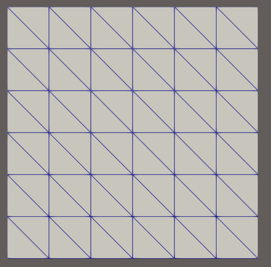
Figure: mesh_kind = tria, Dirichlet boundary conditions.
2. sqr
Structured Cartesian meshes on [0,1] x [0,1], using square cells.
- Boundary conditions: Dirichlet.
- Construction: generated in code with geometry::mesh2d::rectangle(..., false).
- Refinement behavior: same refinement sequence idea as tria, but with quadrilateral cells.
- Good for: comparing DG behavior between triangular and tensor-product cells, and also comparing with usual Finite Difference and Finite Volume methods.
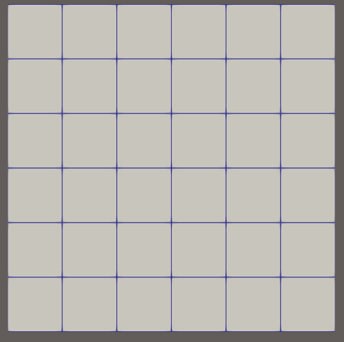
Figure: mesh_kind = sqr, Dirichlet boundary conditions.
3. poly_meshes
Pre-saved polygonal meshes loaded from disk.
- Boundary conditions: Dirichlet.
- Construction: read from test/data/mesh/Mesh_P_*.vtk.
- File pattern: Mesh_P_8.vtk, Mesh_P_16.vtk, Mesh_P_32.vtk, and so on, depending on the requested level.
- Good for: testing the polygonal formulation on static benchmark meshes.
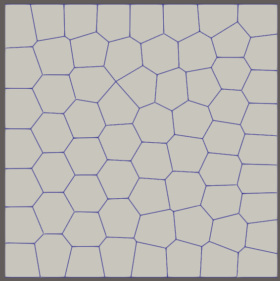
Figure: mesh_kind = poly_meshes, Dirichlet boundary conditions.
4. kway_kmeans
Agglomerated polygonal meshes produced by direct k-way partitioning with k-means.
- Boundary conditions: Dirichlet.
- Construction: starts from a fine 1024 x 1024 triangular background mesh and agglomerates cells with geometry::MethodType::DirectKWay.
- Interpretation: each level corresponds to a different target number of agglomerated regions.
- Good for: studying non-hierarchical agglomeration driven by clustering.
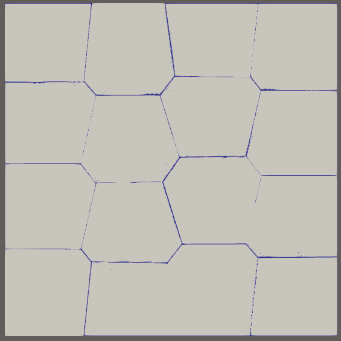
Figure: mesh_kind = kway_kmeans, Dirichlet boundary conditions.
5. kway_metis
Agglomerated polygonal meshes produced by direct k-way partitioning with ParMETIS.
- Boundary conditions: Dirichlet.
- Construction: also starts from a fine 1024 x 1024 triangular background mesh.
- Interpretation: similar to kway_kmeans, but the agglomeration is graph-based rather than cluster-based.
- Good for: comparing ParMETIS partitioning against k-means agglomeration.
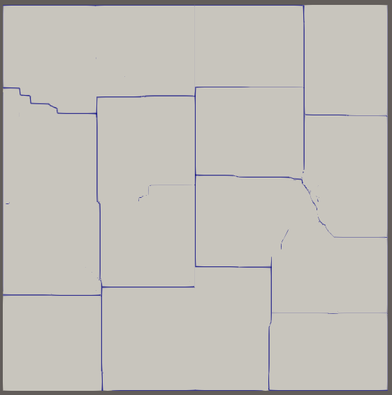
Figure: mesh_kind = kway_metis, Dirichlet boundary conditions.
6. bisect_metis
Hierarchical agglomerated meshes generated by repeated ParMETIS bisection.
- Boundary conditions: Dirichlet.
- Construction: starts from the same fine triangular background mesh and applies geometry::MethodType::BisectNRef.
- Interpretation: this produces a refinement sequence based on repeated binary splits, rather than independent k-way partitions.
- Good for: multilevel studies and hierarchical agglomeration experiments.
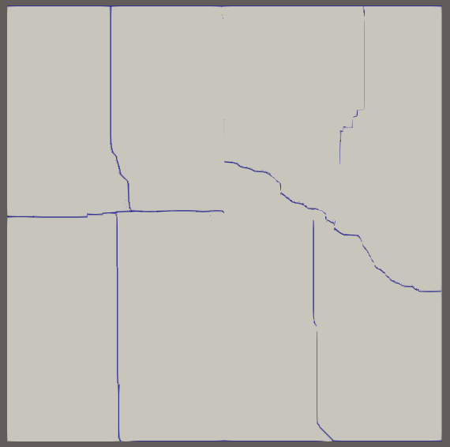
Figure: mesh_kind = bisect_metis, Dirichlet boundary conditions.
7. bisect_kmeans
Hierarchical agglomerated meshes generated by repeated k-means bisection.
- Boundary conditions: Dirichlet.
- Construction: same background mesh as the other agglomerated cases.
- Interpretation: similar to bisect_metis, but the split is determined by the k-means agglomeration machinery.
- Good for: comparing hierarchical k-means and hierarchical ParMETIS outputs.
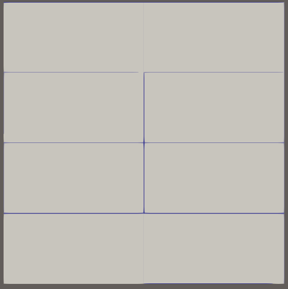
Figure: mesh_kind = bisect_kmeans, Dirichlet boundary conditions.
8. bisect_gnn
Hierarchical agglomerated meshes generated by a graph neural network model.
- Boundary conditions: Dirichlet.
- Construction: starts from the same fine triangular background mesh and uses the models in vulpes/geometry/gnn_models/.
- Interpretation: the agglomeration choices are learned rather than defined only by geometric or graph partitioning rules.
- Good for: comparison with other agglomeration methods.
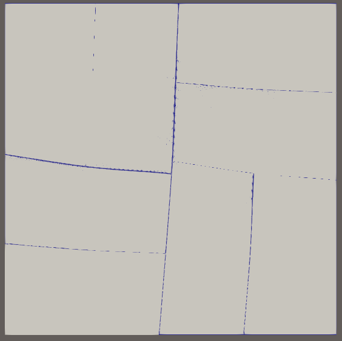
Figure: mesh_kind = bisect_gnn, Dirichlet boundary conditions.
9. rect_tri_periodic
Periodic structured meshes on [0,1] x [0,1], split into triangles.
- Boundary conditions: periodic.
- Construction: generated in code with geometry::mesh2d::rectangle_periodic(..., true).
- Special case: if nlvls <= 0, the example builds a single lightweight 3 x 3 periodic mesh for debugging.
- Otherwise: the sequence uses n = 2^(2+i) for i = 0, ..., nlvls.
- Good for: periodic manufactured-solution tests on a simple structured mesh.
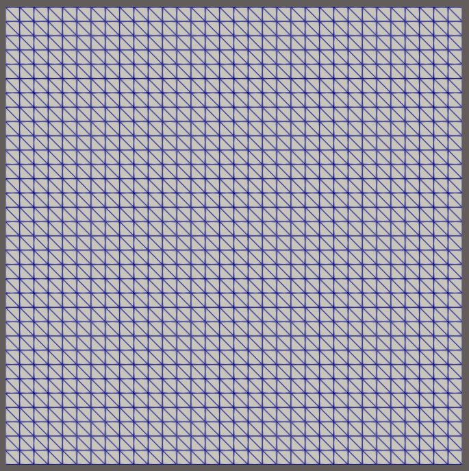
Figure: mesh_kind = rect_tri_periodic, periodic boundary conditions.
10. rect_sq_periodic
Periodic structured meshes on [0,1] x [0,1], using square cells.
- Boundary conditions: periodic.
- Construction: generated in code with geometry::mesh2d::rectangle_periodic(..., false).
- Special case: if nlvls <= 0, the example builds a single lightweight 3 x 3 periodic mesh for debugging.
- Otherwise: the sequence uses n = 2^(2+i) for i = 0, ..., nlvls.
- Good for: periodic tests on tensor-product cells.
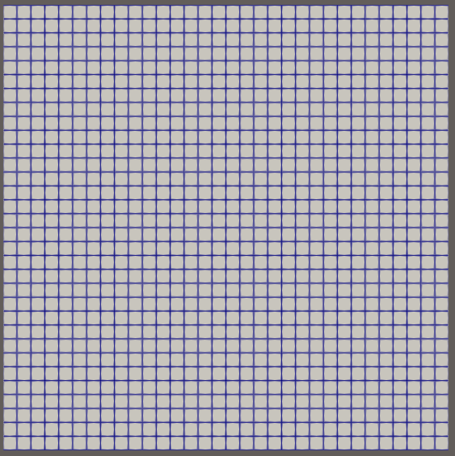
Figure: mesh_kind = rect_sq_periodic, periodic boundary conditions.
11. voronoi_periodic
Periodic polygonal meshes read from pre-saved Voronoi-style files.
- Boundary conditions: periodic.
- Construction: read from test/data/mesh/mesh_periodic_p*.vtu.
- File sequence: mesh_periodic_p0_voronoi.vtu, mesh_periodic_p1_voronoi.vtu, and so on.
- Level cap: the code limits nlvls to 8 to avoid requesting files that do not exist.
- Special case: if nlvls <= 0, the example falls back to examples/data/mesh_periodic_almost_squared.vtu for debugging.
- Good for: periodic DG tests on polygonal/Voronoi-like cells.
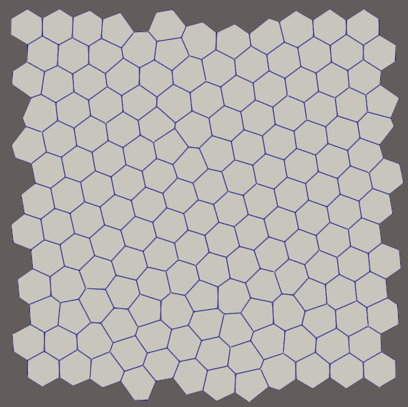
Figure: mesh_kind = voronoi_periodic, periodic boundary conditions.
Visualization
To visualize the meshes, open the mesh in Paraview and select in visualization Properties a representation in "Wireframe" or "Surface with Edges".
To label the mesh with cell or vertex indices, select the "Find Data" (shortcut 'v') and use the options to filter the cell/vertex indexes to be shown.
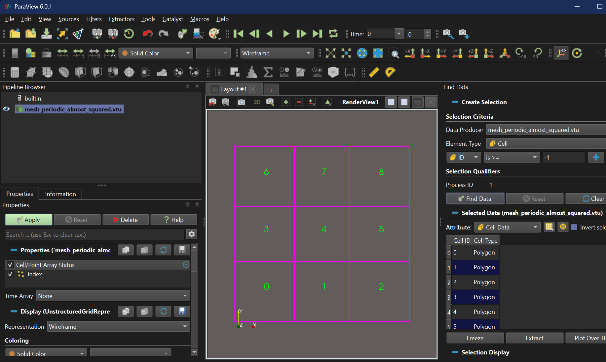
Figure: Paraview visualization with data find tool.
Accessing mesh info in code (cells, neighbors, vertices)
In this Laplacian example, mesh access is done through two complementary objects:
- mesh (topology/connectivity, e.g. number of cells, neighbors)
- cell_manager (geometric cell objects, e.g. diameter, measure, vertex coords)
Topology-level access from mesh
Use the mesh object directly when you need IDs and connectivity:
const index_t ncells = mesh.numCells();
for (index_t cell_id = 0; cell_id < ncells; ++cell_id) {
const auto& neighs = mesh.getDualMap()[cell_id];
const auto cell_vtx_ids = mesh.getCellToVtxMap()[cell_id];
std::cout << "Cell " << cell_id
<< " has " << cell_vtx_ids.size() << " vertices and "
<< neighs.size() << " neighbors\n";
}
If you also want the vertex coordinates from those IDs:
for (index_t cell_id = 0; cell_id < mesh.numCells(); ++cell_id) {
const auto cell_vtx_ids = mesh.getCellToVtxMap()[cell_id];
for (const auto vid : cell_vtx_ids) {
const auto& p = mesh.getVertexes()[vid];
std::cout << "cell " << cell_id << ", vertex " << vid
<< ": (" << p[0] << ", " << p[1] << ")\n";
}
}
DualMaps
In Vulpes, getDualMap() is the mesh dual graph, stored as a CRS map from cell id to neighboring cell ids.
- mesh.getDualMap()[cell_id] gives the neighbor list of that cell.
- mesh.getDualMap()[cell_id][ni] gives the global id of the ni-th neighboring cell.
Conceptually, each cell is a node in the dual graph and an edge exists between two nodes when the two cells share a facet.
Visual sketch (example):
Primal mesh (cells sharing facets) Dual graph (cell adjacency)
+-----+-----+ [0] --- [1]
| 0 | 1 | | |
+-----+-----+ | |
| 2 | 3 | [2] --- [3]
+-----+-----+
Possible dual-map rows:
dual[0] = {1, 2}
dual[1] = {0, 3}
dual[2] = {0, 3}
dual[3] = {1, 2}
The order inside each row (for example {1, 2} vs {2, 1}) is implementation dependent, so treat it as a neighbor set/list, not as a fixed geometric ordering.
Practical notes for this Laplacian assembly:
- The loop index cell_id is the current owner cell.
- The loop index ni is only a local neighbor-list index for cell_id (not a global cell id).
- neigh_cell_id = mesh.getDualMap()[cell_id][ni] is the actual global neighbor cell id used to assemble off-diagonal DG blocks.
DualMap is a cell-to-cell adjacency structure. It is complementary to:
- getCellToVtxMap() (cell to vertex ids)
- getCellToFacetMap() (cell to facet ids)
- getFacetToCellMap() (facet to the two adjacent cells)
Geometry-level access from CellManager
Use CellManager when you need geometric quantities already used by the DG pipeline (measure, diameter, local face geometry, etc.).
assemble::CellManager cell_manager(mesh, fe_space);
for (index_t cell_id = 0; cell_id < mesh.numCells(); ++cell_id) {
const auto& cell = cell_manager.getCell(cell_id);
const double area = cell.measure();
const double hK = cell.diameter();
for (Eigen::Index i = 0; i < cell.vtxs().cols(); ++i) {
std::cout << "cell " << cell_id << ", local vertex " << i
<< ": (" << cell.vtxs()(0, i) << ", " << cell.vtxs()(1, i)
<< ")\n";
}
std::cout << "area=" << area << ", diameter=" << hK << "\n";
}
Quick guideline
- Use mesh for IDs, adjacency, and raw connectivity maps.
- Use CellManager::getCell() for geometric data on each cell.
- For plotting/inspection of coordinates, either:
- map mesh.getCellToVtxMap() -> mesh.getVertexes(), or
- read cell.vtxs() (CellManager/reference-mapped coordinates).
Periodic topology workflow (open/closed)
For periodic meshes, two concepts are really important:
- Open mesh topology: this means the mesh has ghost cells at its borders, so the mesh can be imported and exported to be viewed in Paraview and interfaced with other software.
- Closed mesh topology: this means the mesh topology has been closed, that are no ghost cells, and the the border cells are directly linked to the their respective periodic neighbor, forming a Torus. In a closed topology, border vertices indexes are fixed and matched with periodicity, but their coordinates has multiple possible values, with respect to periodic shifting. A closed mesh is required for correct Vulpes assembly.
A practical reference is: examples/mesh/periodic/mesh_periodic_rectangle.cpp.
That example shows this useful pattern:
- Build a periodic rectangle mesh with rectangle_periodic(...).
- Open periodic topology with openPeriodicTopology(...) for explicit ghost vertices and debug inspection.
- Optionally close it back with closePeriodicTopology(...) and verify the round-trip.
- Print per-cell connectivity from getCellToVtxMap().
Minimal usage pattern:
{0.0, 0.0}, {1.0, 1.0}, {3, 3}, true);
std::cout << "closed vertices: " << mesh_closed.getVertexes().size() << "\n";
std::cout << "open vertices: " << mesh_open.getVertexes().size() << "\n";
for (std::size_t cid = 0; cid < mesh_open.getCellToVtxMap().size(); ++cid) {
const auto row = mesh_open.getCellToVtxMap()[cid];
std::cout << "cell " << cid << ": ";
for (std::size_t k = 0; k < static_cast<std::size_t>(row.size()); ++k) {
std::cout << row[k] << (k + 1 < static_cast<std::size_t>(row.size()) ? ", " : "");
}
std::cout << "\n";
}
A class for a 2D mesh, inheriting from MeshBase.
Definition mesh_2d.hpp:94
Mesh2D< FloatType, IndexType > openPeriodicTopology(const Mesh2D< FloatType, IndexType > &mesh)
Definition mesh_2d.cpp:1775
template Mesh2D< double, int32_t > rectangle_periodic< double, int32_t >(const Point< double, 2 > &, const Point< double, 2 > &, const Point< int32_t, 2 > &, bool, bool, bool)
Mesh2D< FloatType, IndexType > closePeriodicTopology(const Mesh2D< FloatType, IndexType > &mesh)
Definition mesh_2d.cpp:1613
In short: use closed topology for standard assembly workflows, and open topology when you need to inspect ghost vertices or periodic connectivity explicitly, or to export the mesh.
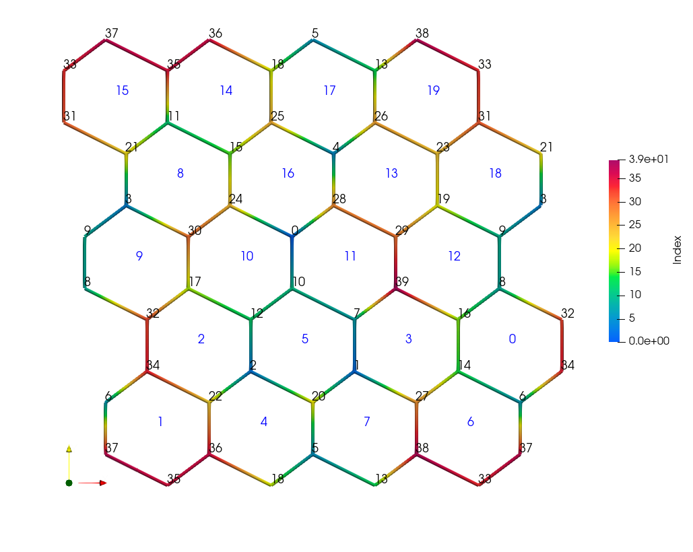
Figure: Example of a CLOSED periodic mesh with indexes used by Vulpes. These are used inside Vulpes for weak form assembly and have a closed connectivity (no boundaries).
Figure: Example of an OPEN periodic mesh with ghost indexes used by Vulpes. These are used for visualization in Paraview and for read/write of VTK meshes.